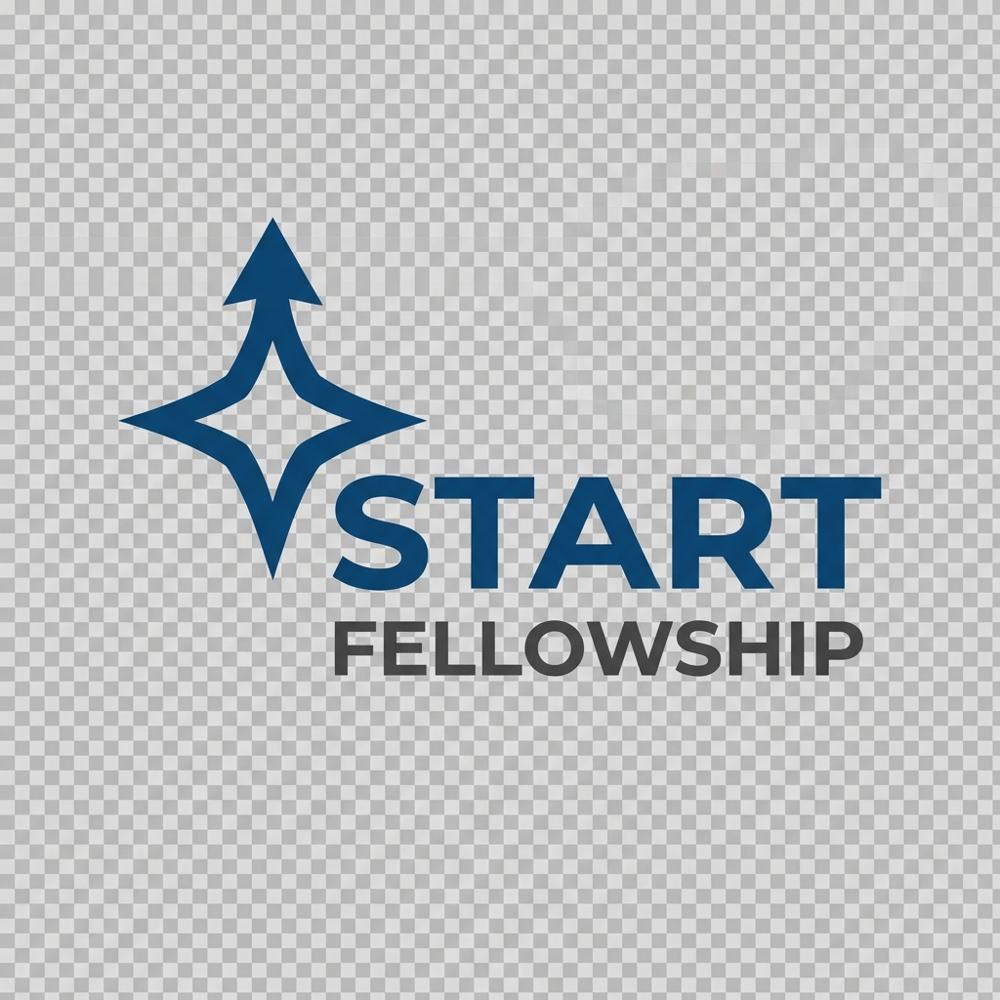

Dirección
Científica
Dra. Verónica Abad
"Médica Endocrinóloga pediatra con más de 20 años de experiencia. Garantiza la calidad médica, científica y ética de todos los contenidos."
Liderado por: Sofía Valencia (Visión Estratégica) y Eduardo Valencia (Expansión & Alianzas).
Ganadores: Mejor Startup
(Entre 300 empresas)
Acelerados por

Suiza
Aliados Institucionales
Salud Pública